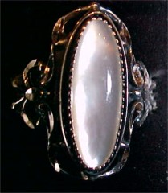

Woman's Mother of Pearl and Sterling Silver Ring
Reg. Price:$36 Sale Price: $32.40.
South Dakota Sterling is different from those traditional designs you've seen
elsewhere. Here they use Sterling Silver to highlight this
beautiful Mother of Pearl woman's ring. You'll be the envy of all your friends.
It comes in sizes 5 through 10. And, of course, the price is right.

|
|
|